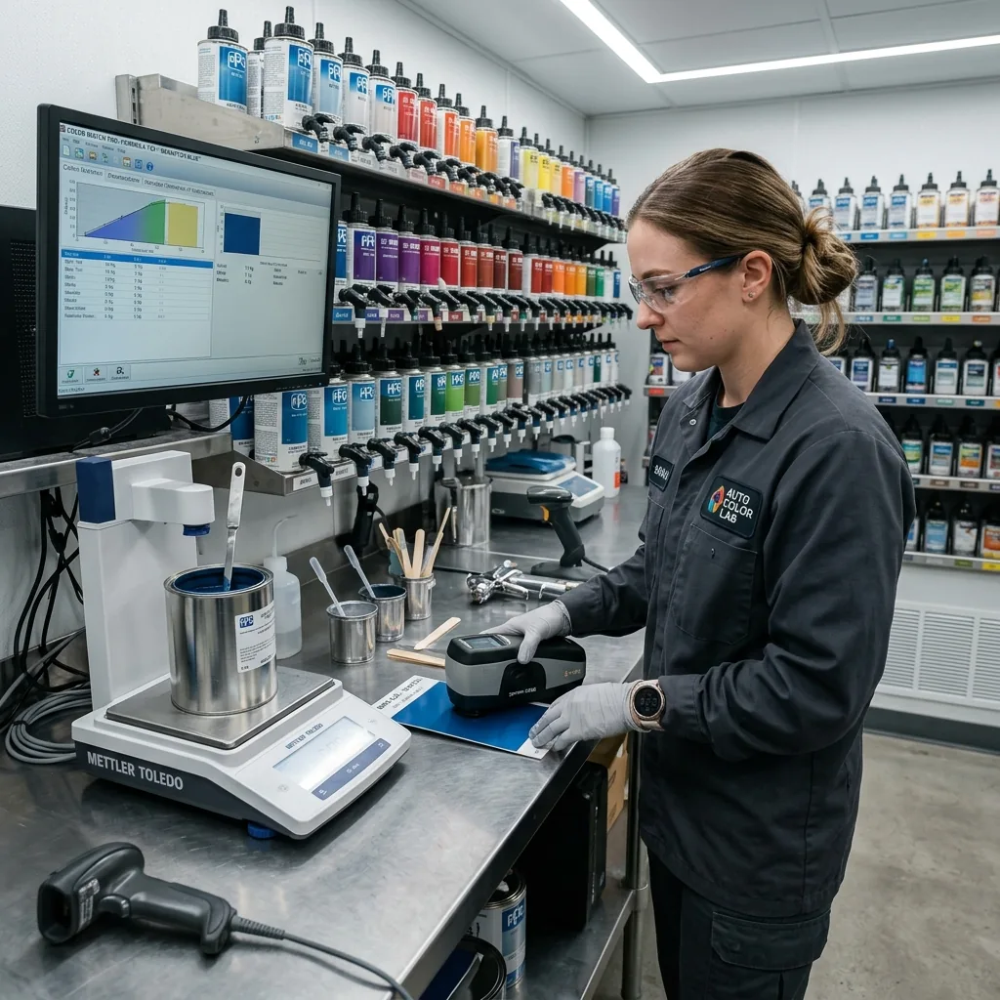

Kusursuz Boyanın Sırrı: Zemin Hazırlığı
Otomobil boyama işleminde görünen kaliteyi belirleyen en önemli unsur, boyanın altında yatan işçiliktir. Yanığılış çekilmiş kalın bir macun tabakası veya kalitesiz bir astar, kısa süre sonra boyanın çatlamasına, dalgalı görünmesine ve paslanmasına neden olur. NeTT olarak, "iyi boya iyi zemine atılır" prensibiyle hareket ediyoruz.
Kaporta düzeltme aşamasında sacı o kadar iyi hizalıyoruz ki, yüzeyi eşitlemek için "yoklama macunu" dediğimiz çok ince (milimetrik) bir katman kullanıyoruz. Asla macunla şekil vermiyor, kaportanın çelik veya alüminyum yapısına sadık kalıyoruz.

Kullandığımız Teknolojiler
- Minimum Macun Prensibi: Sacı çektirme aletleriyle maksimum seviyede düzeltip, macunu sadece pürüzleri almak için mikron seviyesinde kullanıyoruz.
- Epoksi Astar (Pas Önleyici): Özellikle sacın metale kadar açıldığı veya klasik araç restorasyonlarında, sacın oksijenle temasını tamamen kesen, korozyonu önleyen ömürlük izolasyon astarı.
- Akrilik Dolgu Astarı: Boyanın yüzeye mükemmel tutunmasını sağlayan, kılcal zımparça çiziklerini dolduran yüksek kaliteli zemin hazırlığı.
- Kuru Zımparça Sistemi: Sulu zımparçanın metale vereceği pas riskini ortadan kaldıran, vakumlu makinelerle yapılan tozsuz kuru zımparça işlemi.
"Macun Çatlaması" Neden Olur?
Eğer bir kaportacı, darbe alan sacı düzeltmekle uğraşmayıp göçüğü santimetrelerce kalınlıkta macunla doldurursa, aracın doğal esnemeleri veya güneşin sıcağı karşısında o macun zamanla çatlar ve boyayı patlatır. NeTT atölyesinde bu tür amatör uygulamalara asla yer yoktur.
DETAYLI BİLGİ ALIN
Aracınızın hasar durumu veya boya öÖncesi işlemleri hakkında bilgi almak için bizimle iletişime geçin.